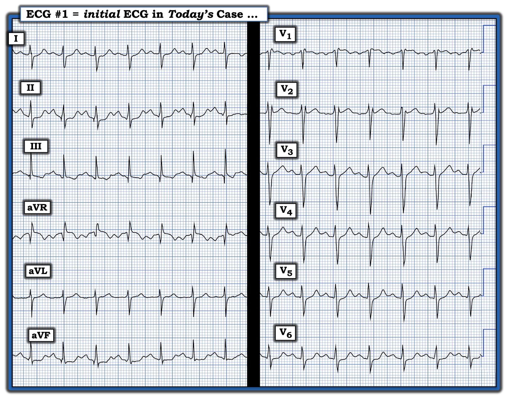
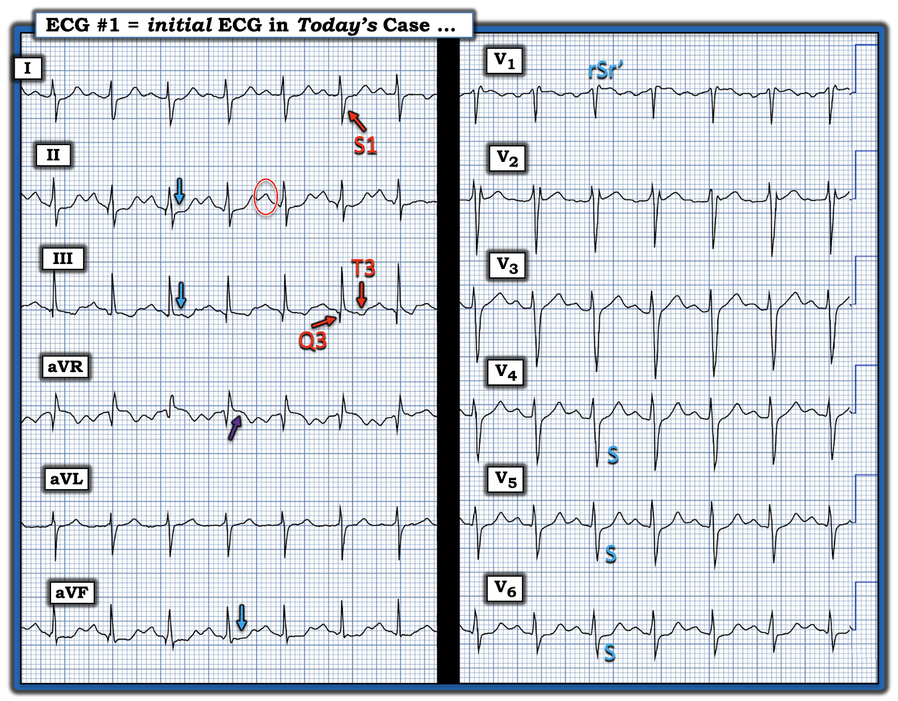
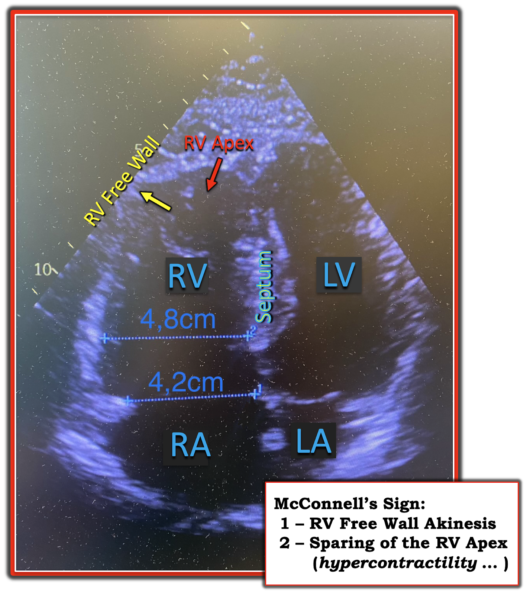
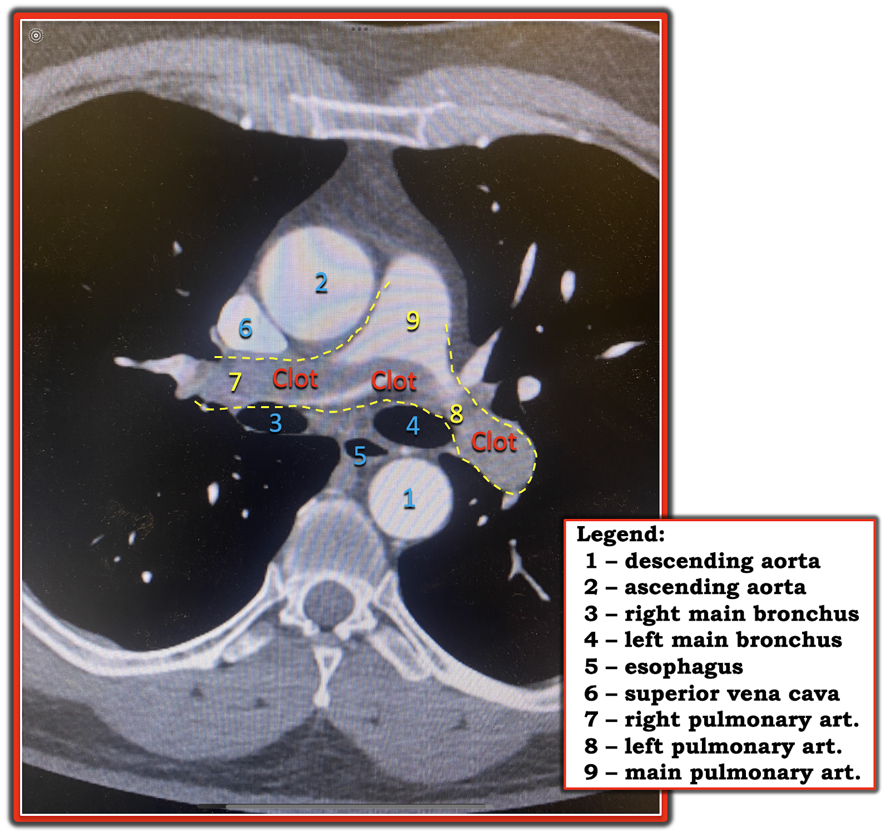
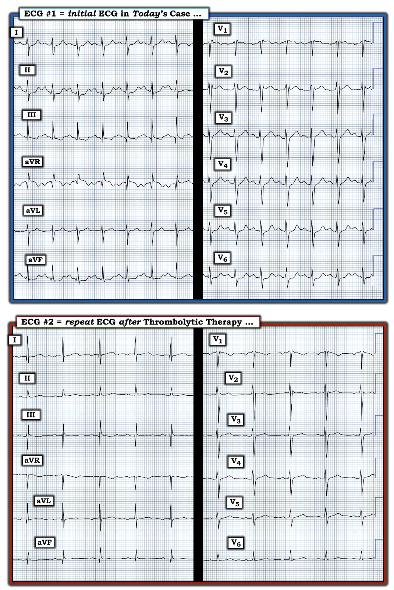
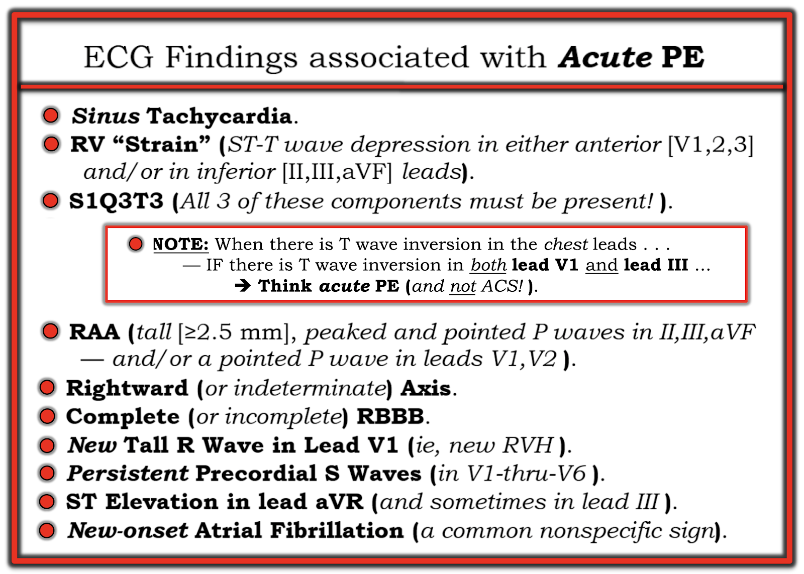
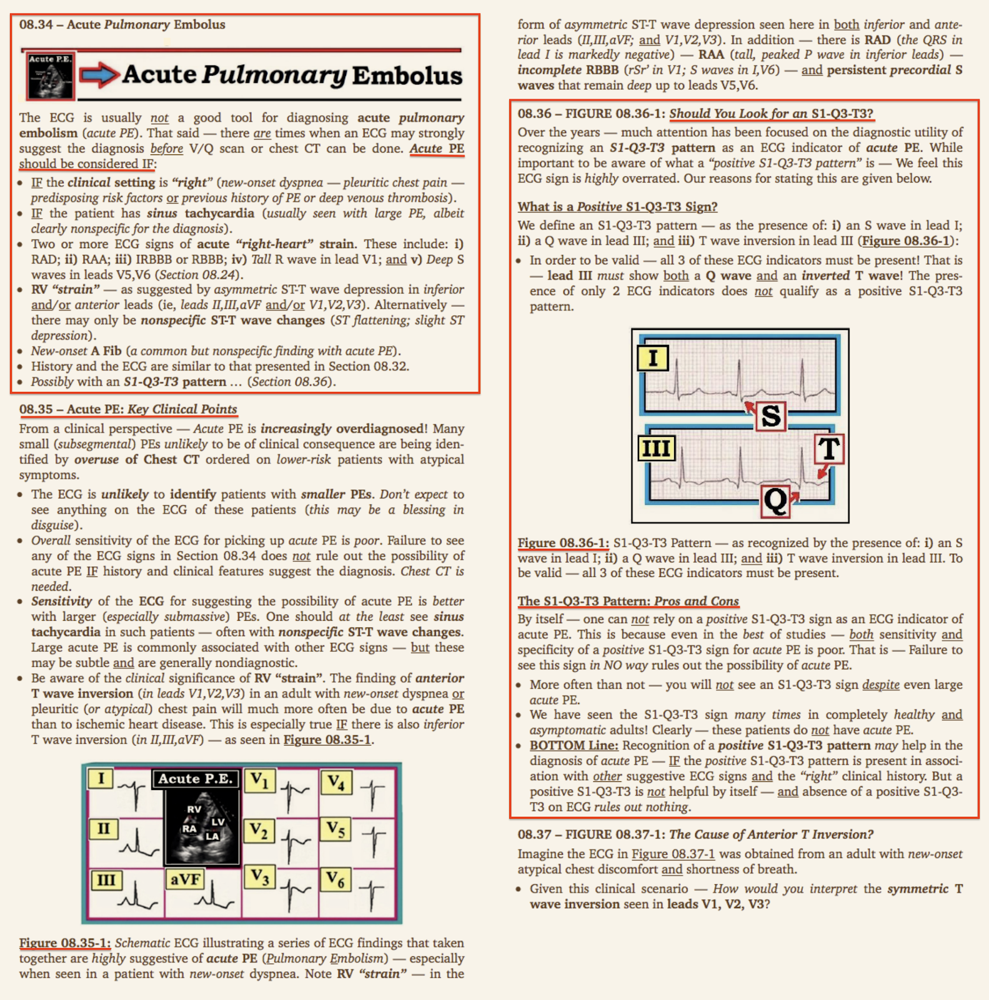
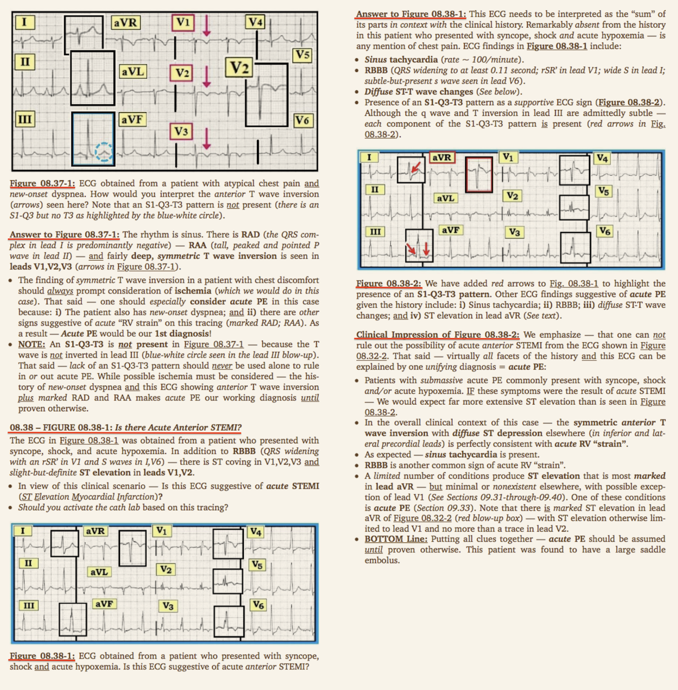
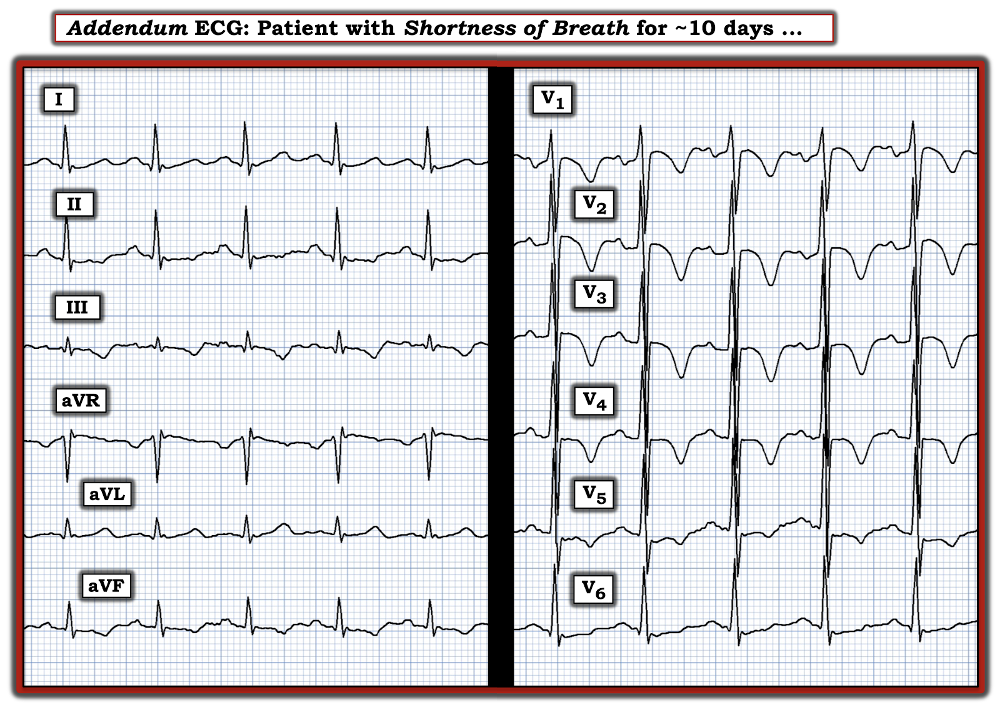

ECG Blog #443 — Người đàn ông ngoài 40 tuổi bị đau ngực và khó thở
Điện tâm đồ ở Hình-1 được ghi ở một người đàn ông ngoài 40 tuổi — đến khoa cấp cứu (Emergency Department) vì đau ngực — CP (Chest Pain) và khó thở.
CÂU HỎI:
- Với bệnh sử nêu trên — BẠN sẽ diễn giải điện tâm đồ ở Hình-1 như thế nào?
- Dựa trên bệnh sử và điện tâm đồ ban đầu của bệnh nhân — phòng thông tim (cath lab) đã được kích hoạt. Bạn có đồng ý không?


SUY NGHĨ CỦA TÔI về CA BỆNH này:
Vì không có mặt tại chỗ — tôi không biết các thông số khám thực thể (huyết áp, tần số thở; độ bão hòa oxy; nghe tim và phổi, v.v.). Điều chúng ta có thể bình luận, với bệnh sử ngắn gọn là đau ngực mới xuất hiện và khó thở — là điện tâm đồ ban đầu ở Hình-1. Tôi thấy những điểm sau:
- Có nhịp nhanh xoang (sóng P dương với khoảng PR cố định ở chuyển đạo II) — với tần số nhanh ~130 lần/phút.
- Về các khoảng — khoảng PR bình thường — QRS có thời gian bình thường. Với tần số nhanh như vậy — khó nói được nhiều về QTc.
- Có RAD (trục lệch phải — Right Axis Deviation) — ở chỗ QRS âm nhiều hơn dương một chút ở chuyển đạo I ( = trục mặt phẳng trán ước tính khoảng +100 độ).
Về lớn các buồng tim — không có LVH. Mặc dù không có tiêu chuẩn rõ ràng của RVH (phì đại thất phải — Right Ventricular Hypertrophy) — vẫn có một số dấu hiệu điện tâm đồ phù hợp với (nếu không nói là gợi ý) "tăng gánh" thất phải (RV "Strain") cấp (Xem Hình-2).
- ĐIỂM THEN CHỐT (PEARL) #1: Trước khi đi tiếp — Chúng ta cần cân nhắc khả năng PE cấp (thuyên tắc phổi — Pulmonary Embolism)! PE cấp vẫn là một trong những chẩn đoán hay bị bỏ sót nhất. Như các đường link tôi đưa bên dưới — NẾU không nghĩ tới chẩn đoán PE cấp, bệnh lý này sẽ bị bỏ sót! (Xem ECG Blog #435 — ECG Blog #313 — cũng như Bình luận của tôi ở cuối trang trong bài đăng ngày 17 tháng 6 năm 2024 trên Dr. Smith's ECG Blog).
Tôi ôn lại chẩn đoán điện tâm đồ của "tăng gánh" thất phải cấp và PE cấp trong PHẦN BỔ SUNG bên dưới (Xem Hình-7, -8, -9). Còn bây giờ — Hãy tiếp tục với các dấu hiệu điện tâm đồ phù hợp với và gợi ý "tăng gánh" thất phải cấp .
- Nhịp nhanh xoang và RAD — như đã nêu ở trên.
- ĐIỂM THEN CHỐT (PEARL) #2: Khi không kèm suy tim (sốc tim) — nhịp nhanh xoang không phải là dấu hiệu thường gặp trong nhồi máu cơ tim cấp. Vì vậy — việc thấy nhịp nhanh xoang ở bệnh nhân hôm nay, người đến viện với cả đau ngực lẫn khó thở (nhất là với tần số tim nhanh tới ~130 lần/phút như ở đây) — cần lập tức khiến ta cân nhắc một nguyên nhân khác ngoài tắc động mạch vành cấp.
- Mặc dù tiêu chuẩn của RAA (bất thường nhĩ phải — Right Atrial Abnormality) không được thỏa mãn một cách chặt chẽ (biên độ sóng P ở chuyển đạo II không đạt 2.5 mm) — sóng P ở chuyển đạo II nhọn và cao hơn thường lệ (trong hình bầu dục ĐỎ ở Hình-2). Trong bối cảnh bệnh sử lâm sàng gợi ý và các dấu hiệu điện tâm đồ khác của "tăng gánh" thất phải cấp — tôi diễn giải việc sóng P ở các chuyển đạo dưới nhọn hơn mức dự kiến là gợi ý RAA, do đó là thêm một chỉ điểm ủng hộ (dù tinh tế) cho "tăng gánh" thất phải (Xem ECG Blog #75 — để biết thêm về tiêu chuẩn điện tâm đồ của RAA).
- S1Q3T3 — Tuy giá trị chẩn đoán của hình ảnh này hạn chế khi nó là một dấu hiệu đơn độc — một hình ảnh S1Q3T3 (như thấy ở Hình-2) rõ ràng — lại rất hữu ích trong ca hôm nay, vì nó đi kèm với các bằng chứng điện tâm đồ khác hướng tới khả năng PE cấp.
- ĐIỂM THEN CHỐT (PEARL) #3: Các dấu hiệu ST-T của "tăng gánh" thất phải cấp — thường gặp nhất dưới dạng sóng T đảo ngược (và/hoặc ST chênh xuống ở các chuyển đạo trước) ở các chuyển đạo trước. Vùng điện tâm đồ còn lại cần tìm "tăng gánh" thất phải — là ở các chuyển đạo dưới, dù theo kinh nghiệm của tôi ít gặp hơn trường hợp chỉ thấy "tăng gánh" thất phải ở vùng dưới mà không đồng thời thấy thay đổi ST-T ở vùng trước.
- Vì vậy — phải thừa nhận rằng, lúc đầu tôi đã ngần ngại với chẩn đoán PE cấp vì không có sóng T đảo ngược ở các chuyển đạo trước trên điện tâm đồ #1. Dù vậy — thay đổi ST-T của "tăng gánh" thất phải cấp có hiện diện ở từng chuyển đạo dưới (mũi tên XANH ở các chuyển đạo II,III,aVF trong Hình-2).
- ĐIỂM THEN CHỐT (PEARL) #4: Thay vì sóng T đảo ngược ở các chuyển đạo trước — có ST chênh lên nhẹ ở các chuyển đạo V1 và V2, kèm đoạn ST thẳng đuỗn ở chuyển đạo V3. Đôi khi — ST chênh lên ở các chuyển đạo trước (thay vì sóng T đảo ngược) như vậy có thể gặp trong PE cấp (Zhan và cs. — Ann Noninvasive Electrocardiol 19(6):543-551, 2014 — và — Omar HR — Eur Heart J: Acute Cardiovascu Care (5(8): 579-586, 2016).
- Các chuyển đạo bên phải như các chuyển đạo III, aVR và V1 — hướng về vùng trước của thất phải. Nếu thất phải lớn — thì các chuyển đạo V2 và V3 cũng có thể hướng về vùng trước của thất phải — và — nếu có thiếu máu cục bộ xuyên thành nặng ở thất phải, bất kỳ chuyển đạo nào trong số này cũng có thể cho thấy ST chênh lên (như thấy ở các chuyển đạo aVR và V1,V2 trong Hình-2).
ĐIỂM THEN CHỐT (PEARL) #5:
MẤU CHỐT để có thể nghi ngờ PE cấp từ điện tâm đồ — là khi bạn thấy một tập hợp các dấu hiệu điện tâm đồ có thể phù hợp với chẩn đoán này (như liệt kê bên dưới trong PHẦN BỔ SUNG ở Hình-7) — ở một bệnh nhân có bệnh sử gợi ý.
- Bệnh nhân hôm nay đến khoa cấp cứu không chỉ vì đau ngực — mà còn vì khó thở, do đó có bệnh sử có thể phù hợp với chẩn đoán này.
- Các dấu hiệu tại giường dễ thu được giúp ủng hộ thêm chẩn đoán PE cấp gồm độ bão hòa oxy thấp — và — tần số thở tăng. Xin nhấn mạnh — Hãy tự mình đếm tần số thở! (Theo kinh nghiệm của tôi, đọc tần số thở từ phiếu theo dõi điều dưỡng không nhất thiết chính xác — vì vậy dành 15-20 giây chỉ để nhìn bệnh nhân thở và đếm nhịp thở là hoàn toàn xứng đáng với chút thời gian ngắn ngủi này của bạn).
- Các dấu hiệu điện tâm đồ (ngoài những dấu hiệu đã nêu ở trên) — phù hợp với PE cấp trên bản ghi hôm nay (theo Bảng ở Hình-7) gồm: i) Tăng tiến sóng R kém, với sóng S tồn tại kéo dài tới tận chuyển đạo V6; và, ii) Hình thái rSr' ở chuyển đạo V1, cùng với sóng s tận hẹp ở các chuyển đạo bên I và V6 — phù hợp với hình ảnh tương đương IRBBB (IRBBB proxy) (Xem Hình-2 có chú thích bên dưới).


======================================
CÂU HỎI:
Mặc dù điện tâm đồ ban đầu hôm nay có thể phù hợp với PE cấp — tôi sẽ không tin chắc 100% vào chẩn đoán này chỉ từ bản ghi ở Hình-2.
- Có thể làm gì tại giường bệnh trong vòng không quá vài phút để xác minh chẩn đoán PE cấp?
TRẢ LỜI:
- Siêu âm tim tại giường — POC (Point-Of-Care) ECHO — đôi khi sẽ cho phép chẩn đoán PE cấp. Khi đó — điều này có thể giúp đẩy nhanh đáng kể việc ra quyết định lâm sàng về kháng đông và/hoặc tiêu sợi huyết.
- Độ nhạy của siêu âm tim tại giường không hoàn hảo. Dù vậy — độ đặc hiệu của siêu âm tim đối với PE cấp có thể rất cao NẾU có mặt một số dấu hiệu siêu âm tim nhất định. Điều này đặc biệt đúng với những PE lớn hơn, có ý nghĩa huyết động hơn — đồng thời cung cấp thông tin tiên lượng tùy theo mức độ suy giảm chức năng thất phải (On và Park — Korean J Intern Med: 38(4);456-470, 2023 và Hritani và cs. — Cleveland Clin J Med 85(110: 826-828, 2018).
======================================
Siêu âm tim của bệnh nhân hôm nay:
Ở Hình-3 — tôi đã chú thích mặt cắt 4 buồng trên siêu âm tim của bệnh nhân hôm nay. Ở Hình-4 — tôi đưa vào đoạn video ghi lại mặt cắt này. Bạn nghĩ sao?


Hình-4: Video ghi lại mặt cắt 4 buồng này. Tôi có đưa vào một đoạn quay chậm để giúp nhận ra dấu hiệu siêu âm tim có giá trị chẩn đoán được mô tả bên dưới.
Hình-3 và -4 về siêu âm tim hôm nay:
Để định hướng — 4 buồng tim được thể hiện ở Hình-3:
- Thất phải — RV (Right Ventricle) giãn rõ rệt, và trông còn lớn hơn cả thất trái. Do quá tải thất phải — vách liên thất — IVS (InterVentricular Septum) bị đẩy lệch về phía bên trái của tim. Ở một bệnh nhân có bệnh sử gợi ý và các dấu hiệu điện tâm đồ phù hợp với PE cấp — việc thấy thất phải giãn tới mức này trên siêu âm tim ủng hộ mạnh chẩn đoán PE cấp . Dù vậy — thấy thất phải giãn trên siêu âm tim không phân biệt được nguyên nhân cấp hay mạn tính của "tăng gánh" thất phải.
- ĐIỂM THEN CHỐT (PEARL) #6: Trái với dấu hiệu thất phải giãn (có thể là một tình trạng đã có từ lâu) — dấu hiệu McConnell là một dấu hiệu siêu âm tim động có tính đặc hiệu cho các tình trạng gây "tăng gánh" thất phải cấp, chẳng hạn như PE cấp.
- Dấu hiệu McConnell được coi là có khi thấy 2 dấu hiệu siêu âm tim: i) Có mất vận động thành tự do thất phải (thấy như mũi tên VÀNG ở Hình-3 — là chuyển động ra ngoài của thành tự do thất phải do áp lực tăng trong buồng thất phải đã giãn); và, ii) Mỏm thất phải biểu hiện tăng co bóp, do bị "neo" (tethered) vào thất trái (mũi tên ĐỎ di chuyển vào trong). Dấu hiệu này dương tính trên đoạn video ở Hình-4 — trong đó mỏm thất phải đã được mô tả như "một tấm bạt lò xo nảy lên nảy xuống trong khi phần còn lại của thất phải vẫn đứng yên."
- Tài liệu tham khảo về siêu âm tim trong chẩn đoán PE: Oh và Park - Korean J Intern Med 38(4):456-470, 2023 — và — Hritani và cs. - Cleveland Clin J Med 85(11):826-828, 2018 — và — NẾU bạn muốn một video ôn tập tuyệt vời dài 5 phút về cách nhận ra dấu hiệu McConnell trên siêu âm tim — XEM_VIDEO_này của Dr. Christopher Voscopoulos.
======================================
CTPA chẩn đoán ở bệnh nhân hôm nay:
Xác nhận cuối cùng PE cấp trong ca hôm nay có được nhờ CTPA ( = chụp CT mạch phổi — Pulmonary Angiography ở Hình-5).
- Bài tổng quan xuất sắc về các xét nghiệm chẩn đoán PE cấp (Moore và cs. — Cardiovasc Diagn Ther 8(3):225-243, 2018).
- Để xem video ôn tập dài 10 phút về cách đọc phim CT phổi — XEM_VIDEO_này của Dr. Jake Gibbons.


======================================
DIỄN TIẾN CỦA CA BỆNH:
"Tin tốt" trong ca hôm nay — là bệnh nhân đã được dùng thuốc tiêu sợi huyết, và cuối cùng hồi phục tốt. Dù vậy — chẩn đoán PE cấp đã bị chậm trễ mất vài giờ, vì ban đầu các nhân viên y tế lo ngại nhiều hơn về nhồi máu cơ tim cấp. Kết quả là — siêu âm tim chẩn đoán đã không được thực hiện cho tới sau khi thông tim cho thấy kết quả bình thường.
- ĐIỂM THEN CHỐT (PEARL) #7: Siêu âm tim tại giường là một xét nghiệm nhanh, chỉ mất vài phút! Trong ca hôm nay — siêu âm tim đã có thể được làm trong lúc chờ phòng thông tim chuẩn bị. Nếu làm như vậy — hình ảnh thất phải giãn rõ rệt và dấu hiệu McConnell dương tính thấy ở Hình-3 và -4 — đã cho phép xác nhận ngay PE cấp, qua đó có thể tránh được việc phải thông tim, nhờ vậy đẩy nhanh việc bắt đầu điều trị tiêu sợi huyết.
======================================
Điện tâm đồ ghi lại sau điều trị tiêu sợi huyết:
Tôi thấy thú vị khi so sánh điện tâm đồ theo dõi được ghi sau khi điều trị tiêu sợi huyết thành công (Hình-6).
- Nhịp nhanh xoang đã hết.
- Trục lệch phải ở điện tâm đồ #2 giảm nhiều (sóng R ở chuyển đạo I đã trở lại chiếm ưu thế dương).
- Không còn thấy "tăng gánh" thất phải (ST chênh xuống ở các chuyển đạo dưới đã hết).
- ST chênh lên ở các chuyển đạo bên phải từng có ở các chuyển đạo aVR, V1,V2 của điện tâm đồ #1 — không còn thấy trên bản ghi lại.
- Sóng S không còn tồn tại kéo dài tới chuyển đạo V6.


==================================
Lời cảm ơn: Xin cảm ơn Magnus Nossen (ở Fredrikstad, Na Uy) đã chia sẻ ca bệnh và các bản ghi này.
==================================
=======================
Các bài ECG Blog liên quan đến ca hôm nay:
- ECG Blog #313 và ECG Blog #435 — Ôn lại các ca về chẩn đoán điện tâm đồ của PE cấp.
- ECG Blog #233 — Ôn lại một ca PE cấp (có bàn luận về tiêu chuẩn điện tâm đồ cho chẩn đoán này).
- ECG Blog #119 — Ôn lại một ca PE cấp (và tiêu chuẩn điện tâm đồ cho chẩn đoán này).
- Bình luận của tôi ở cuối trang trong bài đăng ngày 17 tháng 6 năm 2024 trên Dr. Smith's ECG Blog (về một ca tương tự ca ECG Blog hôm nay).
- ECG Blog #234 — Ôn lại tiêu chuẩn điện tâm đồ để chẩn đoán RVH và "tăng gánh" thất phải.
- ECG Blog #77 — Thêm một bài ôn lại tiêu chuẩn điện tâm đồ để chẩn đoán RVH và “tăng gánh” thất phải.
==================================
PHẦN BỔ SUNG #1 (16/8/2024):
Tôi đưa vào bên dưới một số tài liệu ôn tập về chẩn đoán điện tâm đồ của PE cấp (thuyên tắc phổi — Pulmonary Embolus) và "tăng gánh" thất phải.


==============================
ĐIỂM THEN CHỐT (PEARL) #8: "Lưu ý" (Note) dưới dấu hiệu S1Q3T3 ở Hình-7 — đề cập đến dữ liệu của Kosuge và cs. (Am J Cardiol 99(6): 817-821, 2007 — và bài đăng ngày 4 tháng 3 năm 2023 trên Dr. Smith's ECG Blog) — cho biết khi có sóng T đảo ngược ở các chuyển đạo ngực, nếu sóng T cũng đảo ngược ở chuyển đạo III và V1 — thì PE cấp có khả năng cao hơn nhiều so với bệnh mạch vành cấp (Xem điện tâm đồ ở Phần bổ sung tại Hình-10 bên dưới).
==============================





PHẦN BỔ SUNG #2 (17/8/2024):
Xin cảm ơn Konstantin Tikhonov (ở Moscow, Nga) — người đã gửi cho tôi điện tâm đồ minh họa và ca bệnh sau đây ngay ngày hôm sau khi tôi đăng bài ECG Blog #443 này.
- Bệnh nhân có điện tâm đồ ở Hình-10 — bị khó thở tăng dần trong khoảng thời gian 10 ngày.
- Dựa vào các dấu hiệu điện tâm đồ trình bày ở trên trong Hình-7 (chú ý tới ĐIỂM THEN CHỐT #8) — Bạn nhận ra được bao nhiêu dấu hiệu điện tâm đồ của PE cấp?


TRẢ LỜI:
Điện tâm đồ ở Hình-10 cho thấy các dấu hiệu sau ủng hộ PE cấp:
- Nhịp nhanh xoang.
- S1Q3T3.
- Sóng S tồn tại kéo dài ở các chuyển đạo trước tim (tới tận chuyển đạo V6).
- "Tăng gánh" thất phải cấp (ở đây dưới dạng sóng T đảo ngược sâu, đối xứng ở các chuyển đạo ngực, rõ nhất ở các chuyển đạo V2,V3,V4 — và theo ĐIỂM THEN CHỐT #8, có sóng T đảo ngược ở chuyển đạo V1 và chuyển đạo III, cũng như ở chuyển đạo aVF).
Diễn tiến: Chụp CT phổi xác nhận PE cấp dưới diện rộng (submassive).